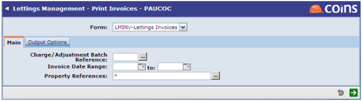

Invoices are printed using an OA document. Configure the lettings invoice document(s) using Document Designer.
On running the invoice print, you can select invoice by charge/adjustment batch, invoice dates or property reference:
